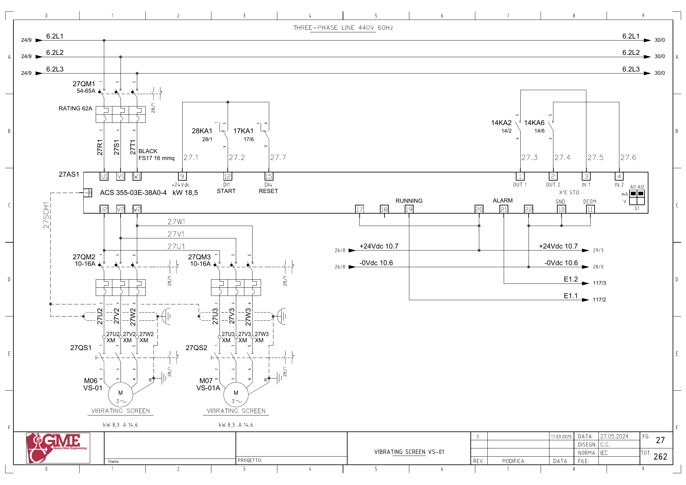
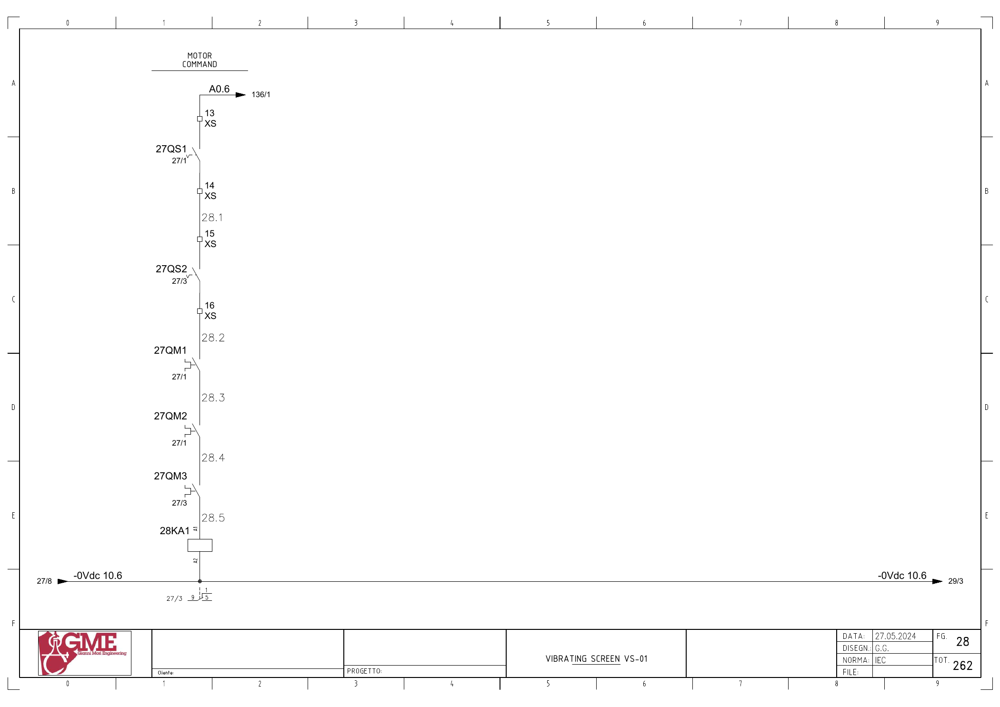

VS01 · 진동 스크린 전기 회로 추적
1. 도면의 구성과 진단 경계
FG27: 공통27AS1 ACS355-03E-38A0-4(18.5kW) 출력이 M06 VS-01과 M07 VS-01A 두 모터(도면 각8.3kW·14.6A)로 분기합니다.
공통 운전 응답은 두 모터 각각의 회전·진동 정상 보증이 아닙니다. 두 개폐기·분기 차단기·모터를 나눠 확인합니다. 백업 브레이크Q49.5는 이 FG27·28에서 실제 구동 회로를 식별하지 못했습니다.
추가 시공도면 · 접속함·케이블·배관 경로 — 승인·현재 설치는 확인 전입니다.
2. 공통 기동 명령
A0.6 ↔ 백업 %Q0.6 / start vs01 · FG28 · PDF 29
- A0.6 (FG136/1)
- XS:13 → 27QS1 보조접점 → XS:14
- XS:15 → 27QS2 보조접점 → XS:16
- 27QM1 → 27QM2 → 27QM3 보조접점
- 28KA1 코일 A1→A2 / 0Vdc10.6
전달·사용 위치: FG27: 인버터 단자9(+24V) → 28KA1 접점1→9 → 단자12(DI1 START). 원본1943의 요청과1794의2초 감시를 연결합니다.
원본 심볼 직접 참조: 1794 / allarms 1 / ORef 558 · 1943 / motors 1 / ORef 386
3. 운전 응답
E1.1 ↔ 백업 %I1.1 / vs01_fbk · FG27 · PDF 28
- +24Vdc10.7 → 27AS1 단자17
- 단자19 → E1.1
- PLC 입력 참조 FG117/2
전달·사용 위치: 공통 인버터 응답입니다. 내부 응답의 전체 전달과 두 모터의 실제 상태를 따로 확인합니다.
원본 심볼 직접 참조: 1024 / time work motor / ORef 1450
4. 인버터 이상
E1.2 ↔ 백업 %I1.2 / vs01_all_inv · FG27 · PDF 28
- +24Vdc10.7 → 27AS1 단자20
- 단자21 → E1.2
- PLC 입력 참조 FG117/3
전달·사용 위치: 원본1794에서 VS01 고장 래치,1943에서 요청 해제를 추적합니다.
원본 심볼 직접 참조: 복원 LAD에서 이 이름의 직접 참조는 찾지 못했습니다. 내부 Inputs 등의 별도 전달·미해석 참조·현재 프로그램은 확인 전입니다.
위 직접 참조는 복원 원본의 같은 심볼명 위치입니다. 읽기·쓰기 역할, 현재 호출, 현장 사용을 함께 확정한 표는 아닙니다. 원본의 simulation 블록 참조가 있더라도 이번 작업에서 가상 실행·개발·시험은 진행하지 않았습니다.
원본 PLC와 연결
남은 확인과 기록
- VS-01/VS-01A 두 모터의 실물 관리 관계·개별 정비 이력 확인
- 각 모터의 회전·기계부·진동과 공통 피드백을 구분
- 원본1944 제목(off)와 Q49.5 백업 설명 it is no longer there, 실제 브레이크 존재·배선 확인
도면을 함께 확인
FG 27 · 해당 도면 보기

FG 28 · 해당 도면 보기

| 기록 항목 | 내용 |
|---|---|
| 현장 식별 | 설비 ID / 반·단자대 / 모터·인버터 명판 / 도면 개정 |
| 신호 구간 | PLC 명령 / 단자 / 직렬 접점 / 릴레이 / DI / 응답 접점 / 입력 / 내부 DB |
| 관찰 결과 | 시각 / 운전 모드 / 기준값의 근거 / 관찰값 / 최초 불일치 구간 |
| 복구 확인 | 원인·조치 / 원인 해제 / Reset / 재요청 / 주변 설비 영향 |